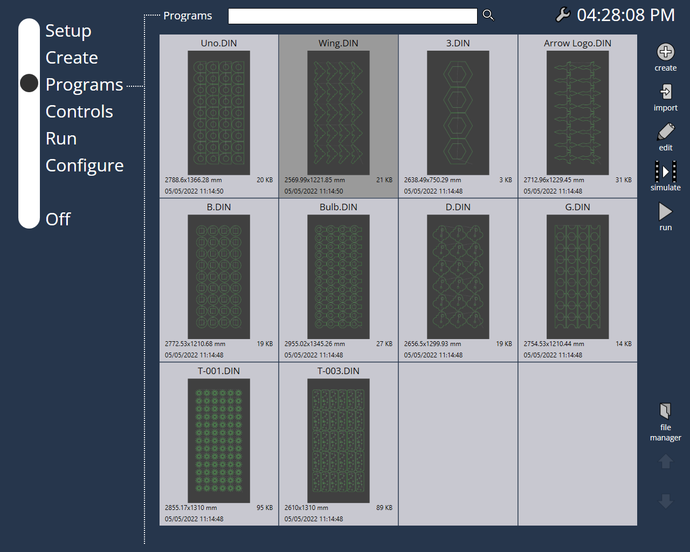
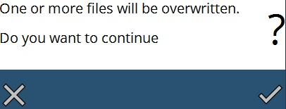

Dateiverwaltung
Import
Um Dateien zu importieren, können Sie direkt die Schaltfläche Import oben rechts auf dem Bildschirm verwenden. Damit können Sie den Import mit einer minimalen Anzahl an Klicks durchführen.

Dateimanager
Alle anderen Dateivorgänge erfolgen über die Option Dateimanager (verfügbar auf der rechten Bildschirmseite).
Für Dateivorgänge stehen folgende Funktionen zur Verfügung:
-
Umbenennen: Mit diesem Befehl können Sie den Namen des gewählten Programms ändern. Geben Sie den neuen Namen in den angezeigten Dialog ein.
-
Löschen: Verwenden Sie diesen Schalter, um das gewählte Programm zu löschen.
-
Klonen: Mit diesem Befehl können Sie eine exakte Kopie des gewählten Programms bzw. der gewählten Programme erstellen. Wählen Sie eines oder mehrere Programme und betätigen Sie anschließend diese Schaltfläche, um eine Kopie des gewählten Programms bzw. der gewählten Programme zu erstellen. Wenn mehr als ein Programm geklont wird, erscheint ein Dialog Dateien klonen, in dem Sie gefragt werden, ob Sie die gewählte Anzahl von Dateien klonen möchten. Sobald Sie die OK-Markierung drücken, werden die Dateien geklont. In der Regel enthält der Name der geklonten Datei eine Zahl hinter dem Teilenamen, getrennt durch eine Tilde (wenn Sie z.B. ein Teil mit dem Namen P5 klonen, ist der Name des geklonten Teils P5~1).
-
Exportieren: Wenn dieser Befehl gedrückt wird, erscheint der Dialog Datei exportieren, in dem Sie den Ort für den Export der gewählten Datei(en) auswählen können.
-
Importieren: Mit dieser Funktion können Sie Programme importieren. Mit dieser Schaltfläche wird der Dialog Dateien importieren aufgerufen, in dem Sie eine oder mehrere Programmdateien oder Dateien von direkten Programmen für den Import wählen können. Wenn die Dateien ausgewählt sind, drücken Sie im Dialog auf die OK-Markierung, um die Datei(en) zu importieren. Wenn der Name der Datei(en), die Sie importieren möchten, bereits vorhanden ist, wird eine Warnmeldung angezeigt (siehe Abbildung unten), in der Sie gefragt werden, ob die vorhandene(n) Datei(en) ersetzt werden soll(en). //Diese Option ist außerhalb des Dateimanager-Menüs vorhanden.

-
Organisieren: Wenn Sie oben auf den Programmheader klicken, wird diese Option geöffnet. Wenn Sie diese Schaltfläche drücken, wird ein Dialog angezeigt, wie in der Abbildung unten dargestellt.

Auf der Seite Bearbeiten werden alle Programme aus dem Ordner Programme angezeigt. Innerhalb dieses Ordners können Sie Ordner anlegen und Daten strukturieren. Sie können neue Ordner mit dem Befehl neuer Ordner erstellen. Dadurch wird ein neuer Ordner innerhalb des Ordners Programme angelegt. Auf der linken Seite sehen Sie den Abschnitt Ordner wählen, der die Verzeichnisstruktur zeigt. Sie können einen Ordner aus der Baumstruktur auswählen, dann wird der Inhalt des gewählten Ordners auf der Seite Bearbeiten angezeigt.
Sie können die Dateien auch im Ordner sortieren, indem Sie die Optionen im Abschnitt Sortieren nach verwenden.
Zum Sortieren nach Namen in aufsteigender Reihenfolge wählen Sie Name [A..Z], und zum Sortieren nach Namen in absteigender Reihenfolge wählen Sie Name [Z..A].
Neueste zuerst zeigt alle Programme an, die kürzlich erstellt wurden, und Älteste zuerst zeigt die Programme in aufsteigender Reihenfolge des Erstellungsdatums an.
Mit Miniaturbilder anzeigen können Sie die Anzeige der Miniaturbilder für die Programme auf der Seite Bearbeiten ein- oder ausschalten. Verwenden Sie die Schaltfläche löschen, um ein Unterverzeichnis zu entfernen.
| Nur ein leeres Unterverzeichnis kann gelöscht werden. |
Drücken Sie fertig, um die Änderungen zu übernehmen und die Seite zu verlassen.